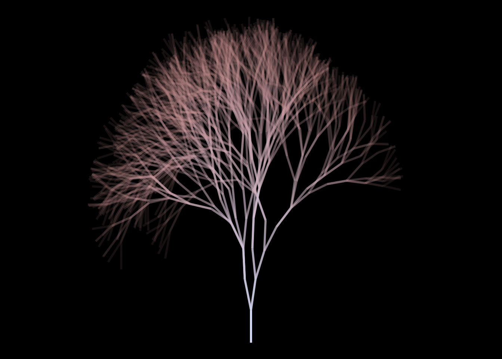

library(tidyverse)── Attaching core tidyverse packages ──────────────────────── tidyverse 2.0.0 ──
✔ dplyr 1.1.2 ✔ readr 2.1.4
✔ forcats 1.0.0 ✔ stringr 1.5.0
✔ ggplot2 3.4.2 ✔ tibble 3.2.1
✔ lubridate 1.9.2 ✔ tidyr 1.3.0
✔ purrr 1.0.1
── Conflicts ────────────────────────────────────────── tidyverse_conflicts() ──
✖ dplyr::filter() masks stats::filter()
✖ dplyr::lag() masks stats::lag()
ℹ Use the conflicted package (<http://conflicted.r-lib.org/>) to force all conflicts to become errorslibrary(RColorBrewer)
set.seed(42)
n_scales <- 8
all_scales <- runif(n_scales,0.95,1)
# all_scales <- c(.8,.9,.95)
n_angles <- 8
# all_angles <- runif(min=-10,max=10,n=n_angles)
# all_angles <- rbinom(n_angles,10,0.5)
all_angles <- rnorm(n_angles,-10,sd=20)
# all_angles <- c(-10,-5,0,5,10,15,20,25)
cycles <- 10
splits <- 2
color_increment <- 0.1
low_color <- "#DAE2F8"
high_color <- "#D6A4A4"
size_decrement <- 0.1
radian <- function(degree){
(degree / 360) * 2 * pi
}
adjust_scale <- function(scale){
new_scale <- scale * sample(all_scales,size=length(scale),replace=TRUE)
return(new_scale)
}
adjust_angle <- function(angle){
new_angle <- angle + sample(all_angles,size=length(angle),replace=TRUE)
return(new_angle)
}
adjust_x <- function(old_x,scale,angle){
new_x <- old_x + scale * cos(radian(angle))
return(new_x)
}
adjust_y <- function(old_y,scale,angle){
new_y <- old_y + scale * sin(radian(angle))
return(new_y)
}
adjust_color <- function(color){
new_color <- color + color_increment
return(new_color)
}
adjust_size <- function(size){
new_size <- size - size_decrement
return(new_size)
}
grow_from <- function(tips){
new_growth <- tips %>%
mutate(
old_x = new_x,
old_y = new_y,
scale = adjust_scale(scale),
angle = adjust_angle(angle),
new_x = adjust_x(old_x,scale,angle),
new_y = adjust_y(old_y,scale,angle),
color = adjust_color(color),
size = adjust_size(size)
)
return(new_growth)
}
grow_sapling <- function(){
sapling <- tibble(
old_x = 0,old_y = 0,
new_x = 0,new_y = 1,
scale = 1,angle = 90,
color = 0,size = 1
)
return(sapling)
}
grow_multi <- function(tips){
branches <- map_dfr(.x = 1:splits,
.f= ~ grow_from(tips))
return(branches)
}
draw_tree <- function(tree){
pic <- ggplot(tree,aes(x=old_x,y=old_y,xend=new_x,yend=new_y))+
geom_segment(aes(color=color,alpha=size),size=1,show.legend = FALSE)+
# coord_equal()+
theme_void()+
xlim(-10,10) +
ylim(0,10) +
# theme_black()+
scale_color_gradient(low=low_color,
high=high_color) +
theme(plot.background = element_rect(fill = "black")) # +
# ggsave(paste(Sys.time(),"ashtree.png"))
return(pic)
}
grow_tree <- function(){
tree <- map_dfr(accumulate(.x=1:cycles,
.f= ~ grow_multi(.),
.init = grow_sapling() ),
~.x)
return(tree)
}
dat <- grow_tree()
pic <- draw_tree(dat)Warning: Using `size` aesthetic for lines was deprecated in ggplot2 3.4.0.
ℹ Please use `linewidth` instead.plot(pic)Warning: Removed 10 rows containing missing values (`geom_segment()`).